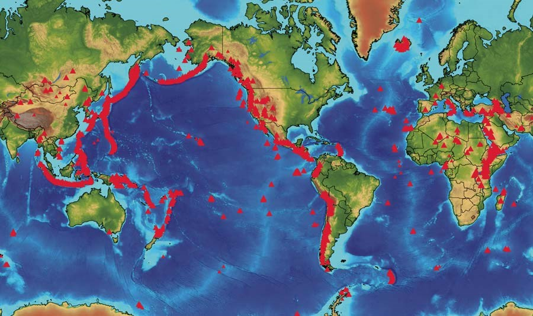

Map of All the Volcanoes in the World

The country with the most volcanoes is the United States.
There are 161 volcanoes in the US.
Most visited volcano:


This volcano is Mt. Fuji. It is located in Japan.
It has around 300,000 tourists visit it per year.
Mt. Fuji is the most visited volcano in the world.